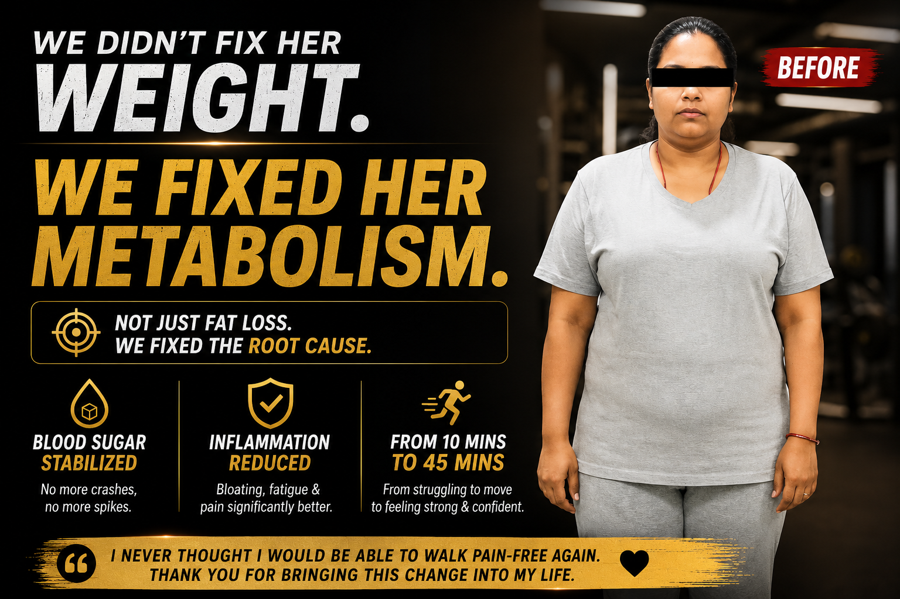
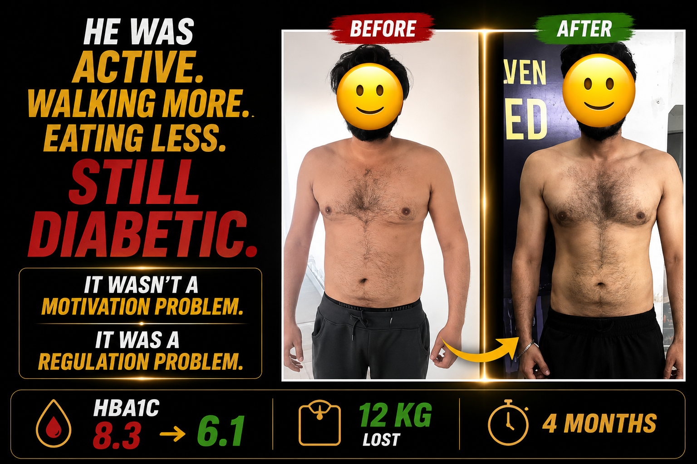
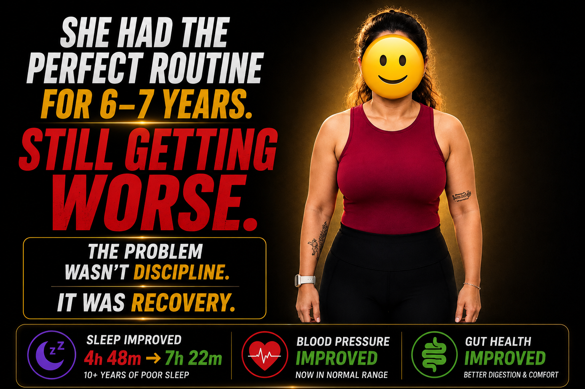
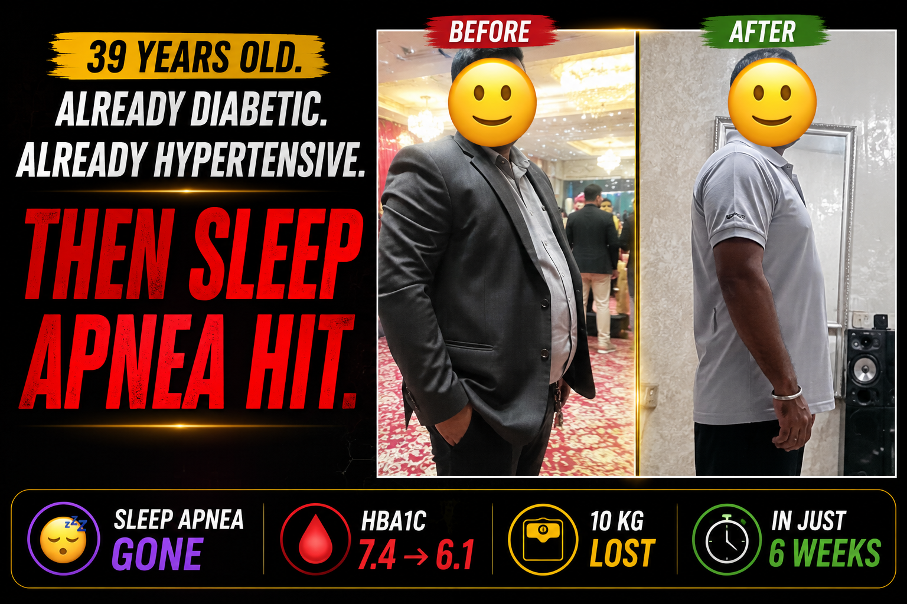

Complete medication dependence with zero real metabolic improvement. The root cause wasn't the diabetes — it was muscle loss, poor sleep, and no meal optimisation quietly driving insulin resistance deeper every month. His doctors were managing numbers. Nobody was fixing the system. We introduced strength training 5x per week, restructured his meals, and implemented sleep protocols. HbA1c dropped from 11.8 to 6.9.

This wasn't a weight problem. It was a multi-system collapse. A corporate professional running on stress, inflammation, and broken sleep — her body was fighting on every front simultaneously. She could barely move without pain. We focused on lowering inflammation, improving sleep quality, and making her body feel safe again. Within 10 weeks, diabetes markers improved, anxiety reduced, cholesterol dropped, and she went from struggling to walk — to walking 45 minutes pain-free.

Years of pushing harder had locked her nervous system into permanent fight-or-flight mode. GLP-1 medication, intense training, calorie restriction — none of it worked because her body didn't feel safe enough to release fat. The mantra of this case: if sleep is broken, stress is high, and recovery is poor — no medication can override that. We did the most counterintuitive thing: stopped the exercise, increased sleep, added purposeful walks and targeted supplements. What didn't happen in 5–6 years happened in 8 weeks.

A college professor working 12-hour days — brain fog, chronic fatigue, hypertension, and diabetes that kept worsening despite medication. Six years of doing what her doctors said. Getting worse every year. The problem wasn't compliance — it was that the root cause had never been identified. We rebuilt her metabolic system from the ground up. What didn't change in 6 years changed in 100 days. Her doctors were stunned by the blood work.

Army background. Disciplined. Active. Doing everything a diabetic is told to do. Still getting worse. This case broke one of the most common myths about diabetes and weight loss — that motivation and effort are enough. It wasn't a motivation problem. It was a regulation problem. We never focused on weight loss. We focused on rebuilding his system — strength training 5x per week, protected recovery, and sleep protocols. The fat loss was a byproduct.

Up at 5am. 1.5 hours of running. Strength training. Doing this religiously for 6–7 years. And every marker was getting worse. Poor sleep, gut issues, high stress, chronic inflammation, constant fatigue. Her body was in survival mode — and more exercise was accelerating the breakdown, not reversing it. The problem wasn't discipline. It was recovery. Sleep improved from 4h 48m to 7h 22m. Blood pressure normalised. Gut health transformed.

She knew medicine better than most. She had tried every protocol. And she still couldn't fix herself. Exhausted through the day, wired at night, waking repeatedly, unable to focus at work — her entire system was struggling. The problem wasn't knowledge. It was that the root cause had never been properly identified. We focused on sleep architecture, nervous system regulation, gut health, and blood sugar stabilisation. In 6 weeks: blood sugar controlled, cravings gone, sleep uninterrupted, full focus restored.

Already managing diabetes and hypertension — then sleep apnea arrived and his entire system collapsed. Choking in his sleep. Zero recovery. His doctor prescribed a CPAP machine. We addressed the root cause instead. Poor recovery, gut dysfunction, chronic stress load — all three were compounding each other. Within 6 weeks: sleep apnea symptoms gone completely, HbA1c dropped from 7.4 to 6.1, and he was walking 8–10 km without difficulty.
Full case study reel being produced. The story is documented — the video drops soon.
GLP-1 medications require a functioning metabolic environment to work. When systemic inflammation is elevated and insulin resistance is deep, the drug's mechanism is blocked before it begins. This case documents exactly what happens when you treat the environment first — and why the same medication that failed for months suddenly started working.
Full case study reel being produced. The story is documented — the video drops soon.
Postpartum fat retention is one of the most misunderstood metabolic states. The combination of hormonal crash, sleep deprivation, cortisol elevation, and insulin dysregulation creates a perfect storm that standard diet and exercise advice makes significantly worse. This case documents the correct sequencing — and why the postpartum body needs an entirely different approach.